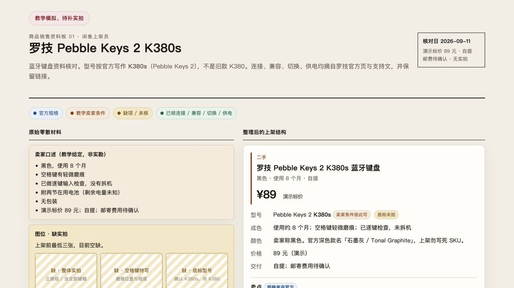
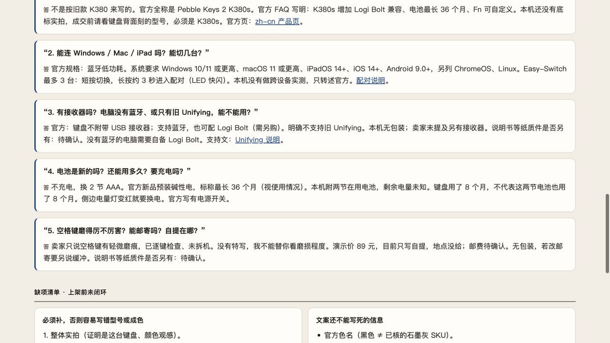
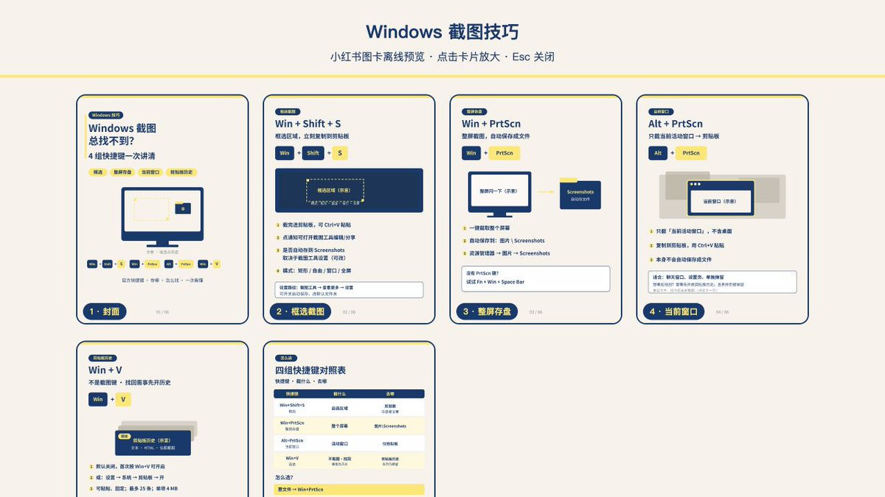
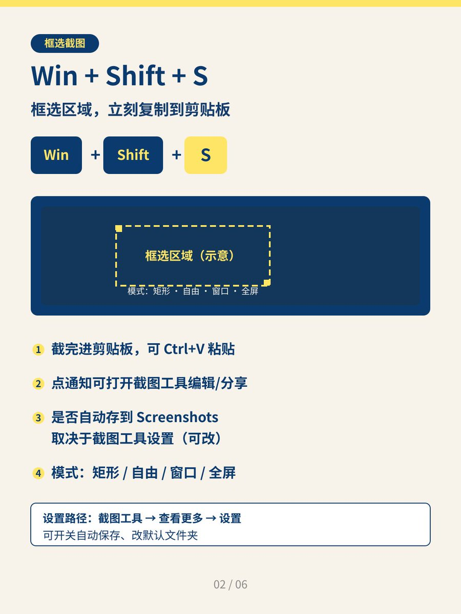
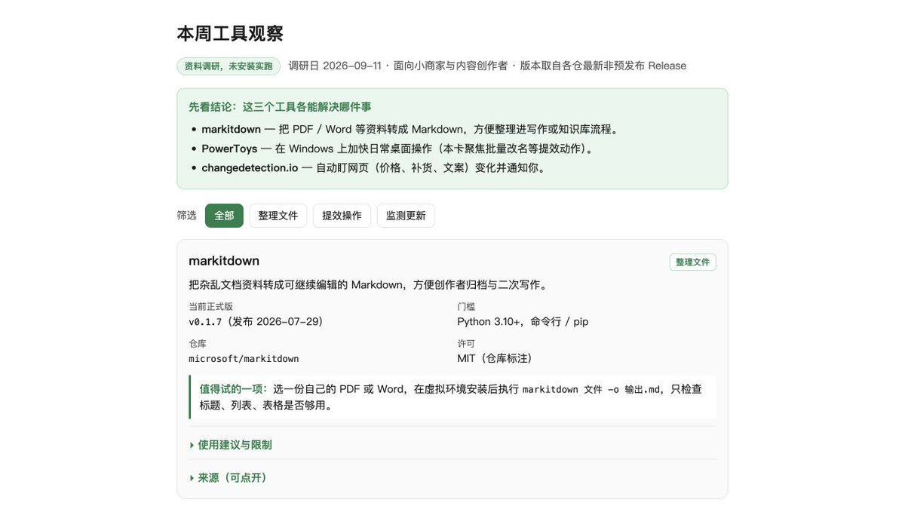
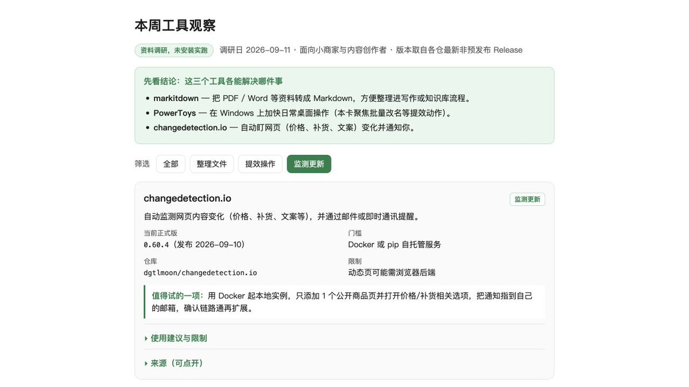
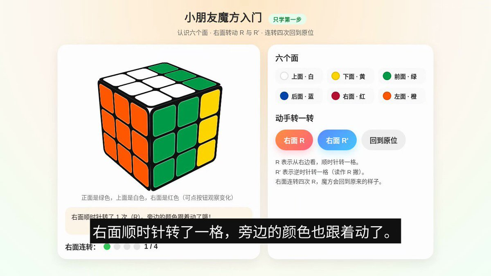
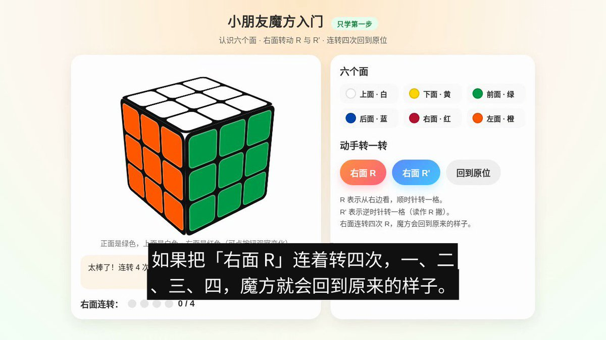
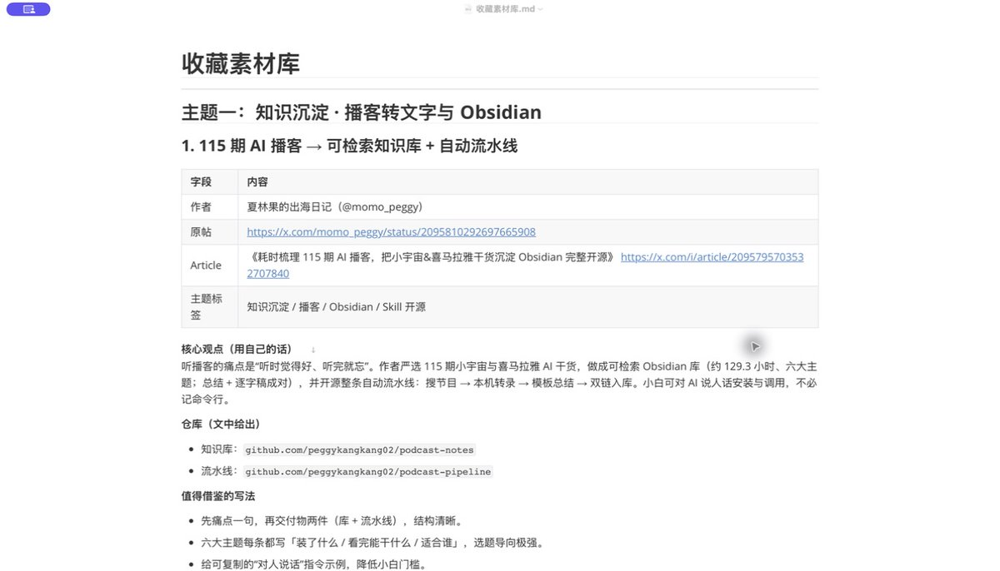

西堂 picks · 23/24
Grok Bot 应用指南实操案例：闲鱼上架、小红书做图、找工具、做短视频、整理收藏
@miles_mazy · Miles Ma · Sat Sep 12 09:40:03 +0000 2026
闲鱼卖一件闲置，要准备标题、商品描述和咨询回复；
小红书发一套知识图文，又得查资料、写正文、排图片。
用 Grok Bot (xAI's AI assistant that comes with its own computer)，可以把材料和要求交给它，让它把这些文件做出来。
下面是五种独立的用法，每个案例各建一个 Bot，完成自己的任务。你可以只选其中一个照着做，比如先做六张知识图卡，或者把收藏的好帖子整理成选题素材。
本文灵感素材来源 @0xlangeai 蓝哥 AI的社群内部分享，在此感谢
先建一个 Bot
在 Grok Bot 侧栏上方点击加号，选择新建 Bot，给它取个容易记的名字。做商品资料就叫「闲鱼上架员」，做图文就叫「小红书编辑」。进入对话，把对应的提示词 (prompt (the instruction you give the AI))发给它，需要用到的文件也一起上传。
这个教程很非常多，就不详细展开了。
下面每个案例都附了一条可以照用的提示词。把商品、选题或素材换成自己的，就能开始做。闲鱼案例中的商品条件和标价是教学模拟。
1. 闲鱼上架员：把商品材料整理成上架资料
家里有件闲置想卖，往往是东西已经拍好了，描述却迟迟没写。型号参数要找，瑕疵又怕漏写。这个 Bot 可以把零散材料整理成一份销售资料，里面包含上架正文、需要补拍的照片，以及买家常问问题的回复。
新建「闲鱼上架员」，准备商品的整体照、瑕疵照和底标照片，再说明用了多久、附带什么、打算卖多少钱。
这里用一把罗技 K380s 键盘做例子：
MARKDOWN block
做出来的资料板如下。左边是卖家提供的情况，右边已经整理成标题、价格、成色、配件和交付说明，商品规格与这把二手键盘的实际情况也分开列出了。

这样准备上架时，可以直接取用正文，再配上自己的实拍。页面还列出了缺哪些照片，不用一边填发布页面，一边回忆还有什么没准备。
下方是针对这把键盘的咨询回复，覆盖型号、系统兼容、接收器、电池和交付方式。买家问到相关问题时，可以从这里取用草稿。

如果你帮商家整理商品资料，也可以按商品提供这一套文件。商家负责提供真实货况，你交付上架正文、补图清单和咨询草稿。
注意型号要写完整，成色、配件和电池情况以卖家提供的材料为准，别让 Bot 自行补全。
2. 小红书编辑：一个选题，做出六张知识图卡
做知识类账号时，一个小问题就能成为一套图文。比如很多人会截图，却分不清图片存在文件夹里，还是只进了剪贴板。把这个问题讲清楚，就够做六页。
新建「小红书编辑」，告诉它面向谁、讲什么、要几张图，以及喜欢什么颜色：
MARKDOWN block
这就是六张图放在一起的效果。配色、标题位置和图形风格保持一致，封面提出问题，中间几页分别讲操作，末页是一张方便收藏的对照表。

单独看「框选截图」这一页，大字给出快捷键，中间用示意图说明选区，下面解释图片去向和设置位置。读者看图就能照着按，不需要读一大段文字。

PNG 可以直接用，SVG 留着改字和排版，发布时的正文也已配好。以后做办公技巧、软件入门、产品使用说明，也可以沿用这种形式。给培训机构或商家做操作卡时，也可以交付这套图片、正文和源文件。
截图是否自动保存与系统设置有关；Win + V 查看的是剪贴板历史，找回旧记录需要提前开启历史功能且记录仍被保留。
3. 工具情报员：把工具链接做成一份有用的简报
想找一个能帮自己干活的工具，光看名字和介绍往往拿不准。这个 Bot 可以查官方资料，把工具按用途整理好，每个都配上一件可以尝试的工作。
新建「工具情报员」。这里以内容工作室为对象，整理三个工具：
MARKDOWN block
简报做成了三张工具卡，分别介绍提效操作、文件整理和网页更新监测。每张卡都带用途、上手门槛、可尝试的任务和来源，省去了在多个介绍页面之间来回翻找的麻烦。

需要找监测工具时，点击「监测更新」，页面就只显示对应的卡片。像这样按工作筛选，比面对一长串工具名更容易做选择。

如果你经营某个行业的社群，可以把要求换成「帮电商运营找工具」或「整理适合教师的工具」，做成每周资料。简报里写清适用的工作和上手条件，成员才知道值不值得试。
这份示例是资料简报，三个工具没有逐一安装试用，适合用来初步筛选。
4. 视频教程师：做一个魔方小工具，再把操作录成视频
给孩子讲魔方，拿着文字解释顺时针、逆时针，不如让他看着转一次。天蓝在分享里提过这个玩法：先让 Grok Bot 做教学工具，再录屏、剪辑、配音。下面就按这个思路做一段魔方入门视频。
新建「视频教程师」。这里先做一节入门课，只讲六个面和右面转动，不一下子塞进整套还原公式：
MARKDOWN block
Bot 做出的工具左边是魔方，右边列出六个面的颜色，以及「右面 R」「右面 R′」「回到原位」三个按钮。点一下 R，能看到相邻面的色块换了位置；点 R′，色块又转回来。
下面这张图截自它录好的视频。画面里正在演示 R，底部同时显示中文讲解字幕

成片约 51 秒，从认识六个面讲到转动方向，最后演示右面连续转四次回到原位。中文配音、字幕和操作画面都已经合在视频里，另附一份字幕文件，方便以后调整。

观看这段魔方入门视频：https://x.com/0xlangeai/status/2090743461574250762?s=20
除了视频，小工具也保留下来了。孩子看完可以自己点一遍，对照前后色块的变化理解转动。
录软件操作、产品使用说明，也可以这样做。一次只教一个动作，比如导入一份表格、设置一个筛选条件，视频更容易讲清楚，观众也方便跟着练。
这节只讲魔方入门动作，不是完整还原教程。
5. 收藏整理员：把收藏过的帖子变成选题素材
刷到好文章就点收藏，写东西时却想不起放了什么。让 Bot 把这些内容按主题分好，留下观点、写法和原链接，收藏才方便拿来用。
新建「收藏整理员」，从 X 收藏里挑几条想整理的帖子，把链接一起发给它。这次选的是播客知识库、Agent (an AI that takes steps on its own to finish a task) 评估、设计 Skill (a saved how-to the bot can reuse)、长文转图文和视频工作流 (workflow (a chain of steps done in order))这五类内容。
MARKDOWN block
Bot 交回了两份 Markdown (a simple way to format text with symbols)：一份「收藏素材库」，一份「选题建议」。素材库按五个主题分节，每条都保留作者和原帖链接，下面写核心观点，再拆出值得借鉴的写法。
比如夏林果分享的播客知识库，原帖讲的是把 115 期播客整理进 Obsidian。Bot 留下了这条素材的来源，并提炼出一个适合教程的切入点：先做出一集播客的逐字稿和摘要，让读者看见整理后的笔记长什么样。

接着，它围绕「给新手的 AI 实操教程」提出了三个选题：
- 把一集播客整理成能搜索的 Obsidian 笔记。
- 给 AI 客服草稿列一份检查清单，判断回复有没有漏掉要求。
- 把自己的一篇长文做成一张封面、三张小红书正文卡片。
这些建议已经缩小到了具体任务。拿第三个来说，准备好一篇自己的文章，就能继续做图文案例，不必再从一堆收藏里重新找方向。
以后写文章时，先按主题找资料，就能知道某个例子出自谁、为什么值得用，也方便回到原帖继续读。
借鉴思路时保留出处，别把别人的经历写成自己的实操。
我是 Miles，一名从大厂转型 FDE 的 AI 算法专家，做过算法研发、优化部署，也做过企业培训、落地交付。我 X 一个月做到 2 万粉，一周写出三篇百万曝光长文，其中两篇超过 200 万。
关注我 @miles_mazy，一起成长，一起赚钱。
Source: https://x.com/miles_mazy/status/2098708209095819605
← Grok Bot连接飞书，组建一支X内容团队，附保姆级教程 How To Build a One-Person Company Using →